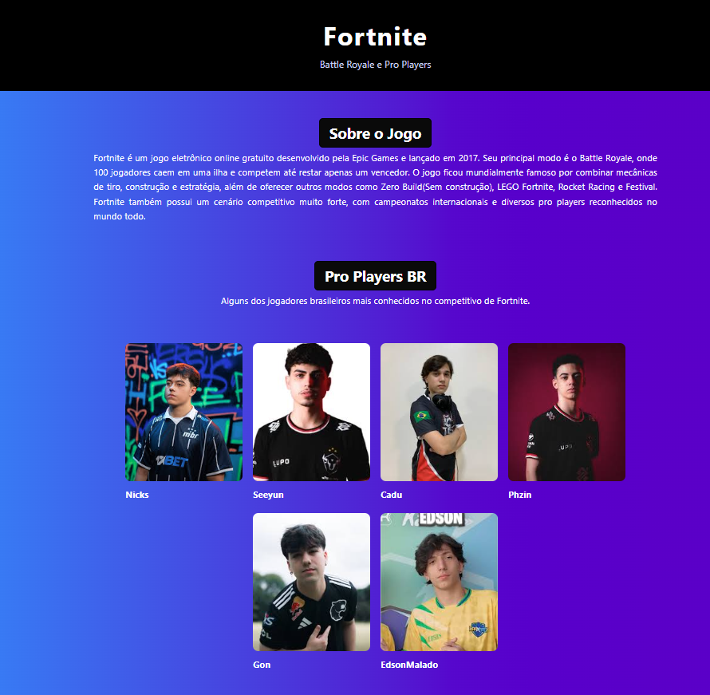

Flex Box
Aprendendo sobre o Flex Box, um modelo de layout em CSS que facilita a criação de layouts flexíveis e responsivos.
O que aprendi
Nessa aula, aprendi sobre o Flex Box, um modelo de layout em CSS que facilita a criação de layouts flexíveis e responsivos. O Flex Box permite que os elementos sejam organizados de forma mais eficiente, especialmente em situações onde o espaço disponível é limitado ou quando é necessário alinhar elementos de maneira dinâmica. Aprendi como utilizar as propriedades do Flex Box para controlar a direção, alinhamento, distribuição e ordem dos elementos em uma página web. Além disso, tive a oportunidade de praticar aplicando o Flex Box em meus projetos, o que me ajudou a entender melhor como criar layouts mais complexos e adaptáveis usando CSS.
O que desenvolvi
Nessa aula, consegui desenvolver a habilidade de usar o Flex Box para criar layouts mais flexíveis e responsivos em meus projetos CSS. Pratiquei o uso de propriedades como display: flex, flex-direction, justify-content e align-items para controlar a organização e o alinhamento dos elementos em minhas páginas web. Além disso, experimentei diferentes combinações dessas propriedades para criar layouts mais complexos e visualmente atraentes, o que me ajudou a entender melhor como o Flex Box pode ser usado para resolver desafios comuns de layout em CSS.
Projeto(s)

Conhecimentos Adquiridos
- display: flex 100%
- flex-direction 100%
- justify-content 100%
- align-items 100%
Desafios
Um dos principais desafios ao trabalhar com Flex Box é entender como as propriedades interagem entre si e como utilizar cada uma delas de forma eficaz para criar layouts desejados. Mas com a prática, esses desafios se tornam mais faceis e os resultados ficaram cada vez melhores.